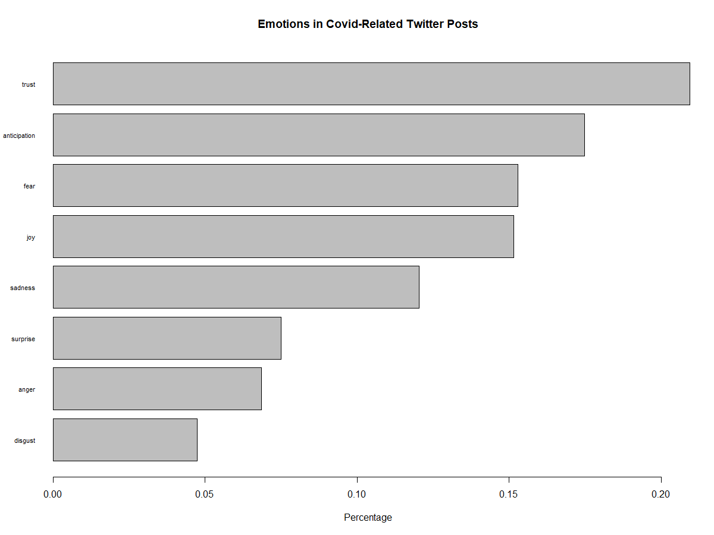
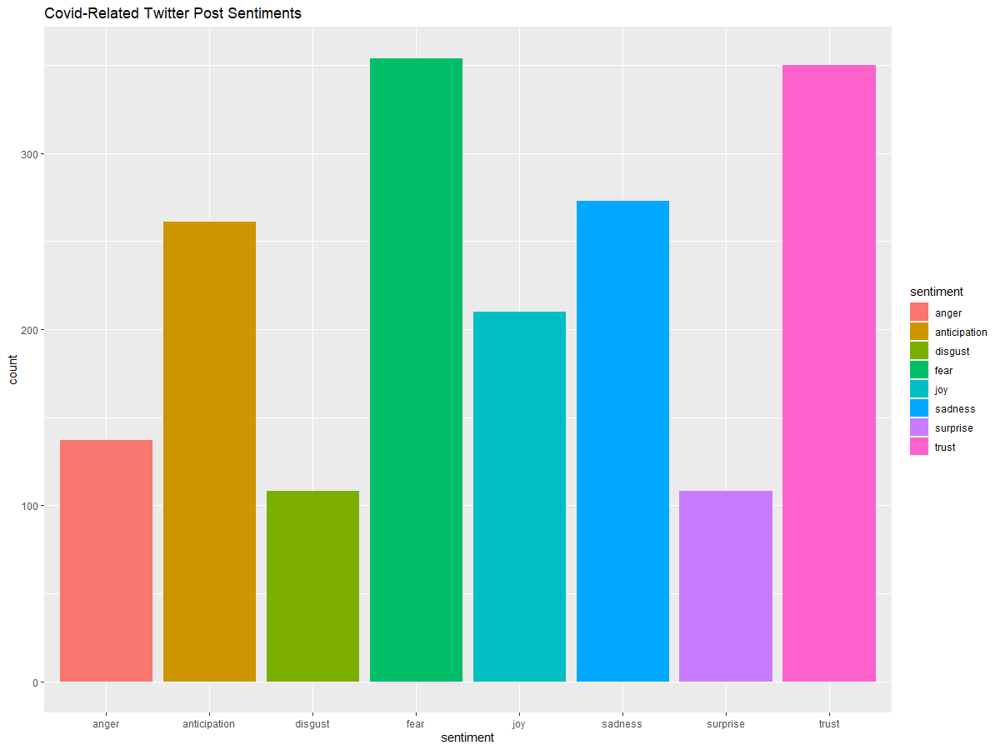

Twitter Data Collection
by Archie Rincon
Data Collection
I collected tweets from Twitter by scraping the platform. I used a library from GitHub called Twint, and since Twint only allows up to a week to be scraped, I needed to set up an algorithm that searched all weeks from March 14, 2020, to February 22, 2022. I did this by using a loop that stopped at the last week and got every date seven days after March 14, 2020. It then collected tweets and gave a start date and end date. In total, this algorithm collected up to 514,283 tweets (after pruning for non-English tweets, text was processed in Python with LangDetect) and searching across eight different hashtags/keywords ("#Covid", "#COVID19", "#coronavirus", "#covid_19", "Covid", "COVID19", "coronavirus", "covid-19".) Upon cleanup and processing, the data was given to Duane to process for the sentiment. Once the data was given sentiment, I was able to visualize the data from there.
Findings - Data Visualization
All markings on the graphs can be mapped to the dates found here
Since the data had multiple values on a day, graphing lines was not an option. With the assistance of Jacob Bellows, Excel calculated the average of every day that had tweets. The only days that were excluded were days that did not have tweets or were outside the date range.
Averages of the Compound Sentiment with Dates

This is the compound average. The compound score is the sum of positive, negative, and neutral scores and is normalized between -1 and +1. For graphing, this number has been multiplied from -100 and +100. The closer a score lies to +100, the higher the positivity. Inversely, a score closer to -100, the higher the negativity. The graph has been given a regression line, to best describe the behavior of the data. We can see that there is a negative relationship between how Twitter feels about opinions concerning COVID-19 and the time going on.
Averages of the Positive/Negative Sentiment with Dates

This is the negative average. The negative score is based on a ratio of proportions of the text that fall into the category and should sum up to be close or equal to one. The same goes for the positive score. Both the negative and positive and neutral scores should add up to 1 (or close to it.)

"The pos, neu, and neg scores are ratios for proportions of text that fall in each category (so these should all add up to be 1... or close to it with float operation). These are the most useful metrics if you want to analyze the context & presentation of how sentiment is conveyed or embedded in rhetoric for a given sentence." - The VADER GitHub Page
How Many Negative/Positive/Neutral Tweets per Hashtag?

Some notes about the graph:
- Red: "covid" and "#covid" polarities amount
- Green: "covid19" and "#covid19" polarities amount
- Blue: "coronavirus" and "#coronavirus" polarities amount
- Yellow: "covid-19" and "#covid_19" polarities amount
What I found unexpected was that there are more positive tweets but the overall compound graph showed that it had a negative slope.
 Word Cloud

This WordCloud is by Kalyssa Harris
Methods
All graphs were achieved with R, programmed by me (Archie). All tweets were collected in Python with Twint to scrape Twitter, by me (Archie). All tweets were then processed to determine if they were in English or not using LangDetect in Python, by me (Archie), and given a sentiment score with VADER, by Duane.